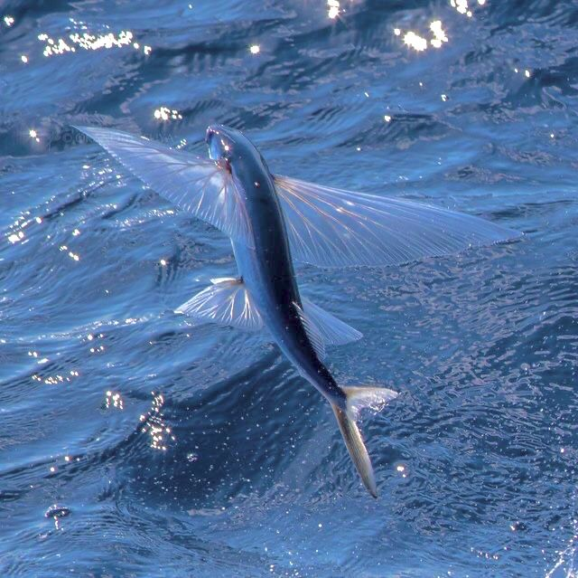
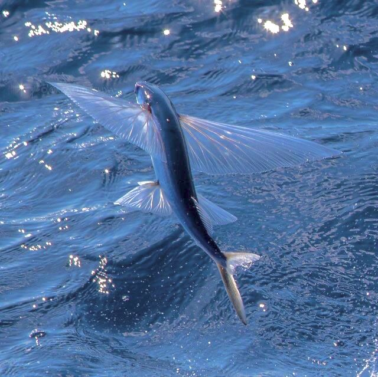

поверхня (0-10 метрів)
 

Чотирикрила летюча
Летючі риби рятуються від хижаків за допомогою польоту. Завдяки своїм великим грудним плавникам вони можуть долати 64 км/год і пролітати до 1000 м!
Риба Місяць
Найбільша сучасна кісткова риба. Досягає 3 метрів у довжину та ваги 1,5 тонни.
Може виникнути питання, як така велика та неповоротка риба ще не зникла? Вона відкладає більше ікри, ніж будь-яка інша хребетна тварина у світі. За один раз самка може відкласти до 300 мільйонів ікринок, що робить її абсолютним рекордсменом серед риб.
середня глибина (10-200 метрів)
- Синій лобстер
- Риби клоуни
Сині омари – це скарб. Їх колір - генетична мутація, через яку їхній організм виробляє надлишок білку. Мутація трапляється раз на 2 млн омарів!
Морські анемони мають отруйні щупальця, які їдять дрібних риб. Але рибам-клоунам ці щупальця не завдають шкоди і вони живуть серед них, захищаючись від хижаків. В свою чергу, риби-клоуни служать приманкою для багатьох риб, які хочуть їх схопити, а стають їжею анемона.
сутінкова зона (200-1000 метрів)
Риба - топор
Її тіло нагадує формою топор і має сріблястий колір, тому так і називається.
Циліндричні очі дозволяють бачити віддалені об'єкти, пасть відкрита, повернута догори, що дозволяє заковтувати їжу, яка спускається з верхніх шарів води.

Риба - вудильник
Використовує свій спеціальний орган, схожий на лампу, який знаходиться на голові і випромінює світло завдяки бактеріям. Це світло допомагає їй приваблювати здобич.
Тільки самки цієї риби мають цю лампочку, а самці набагато менші і не здатні світити.
Важко знайти партнера для продовження роду. Деякі риби радикальні. Зустрічаючи самку, молоді самці прилипають до самки, стаючи продовженням її організму. Коли самка метає ікру, самець відразу її запліднює.
Гримпотевіс або "маленька жаб'яча риба"
Має м'які та прозорі тіла, які дозволяють їй плавати в глибинах океану, де важко вижити іншим створінням.
Ці риби здатні відчувати дуже низькі температури і глибокий тиск, а їхнє тіло нагадує змішання восьминога і риби.
глибоководні (1000 метрів)
Живоглот чорний
В темних глибинах пошук їжі - велика проблема, тому треба викручуватись. Риба має великі щелепи, що дозволяє ковтати рибу більшу за неї.
Живоглот повільно пливе, відкривши рота, і чекає, коли якась риба запливе йому в пасть. Має на кінчику хвоста світлу пляму, яка привертає увагу здобичі.
Риба - ліхтарик
Виходить зі свого укриття тільки по ночах. У неї є два органи, що складаються з мільярдів бактерій, які випромінюють світло.
Риба не може змусити ці бактерії погасити світіння, але має особливий орган, який перекриває світло. За допомогою світла риба може обдурити хижака, раптово гаснучи і змінюючи напрямок руху.
Іскристий кальмар
Деякі кальмари володіють органами, які світяться крізь стінки тіла. Ці органи являють собою складну структуру з рефлекторів і лінз.
Кальмари інших видів несуть на собі бактерій, що світяться, які проникають у тварину ще на ембріональних стадіях її розвитку.